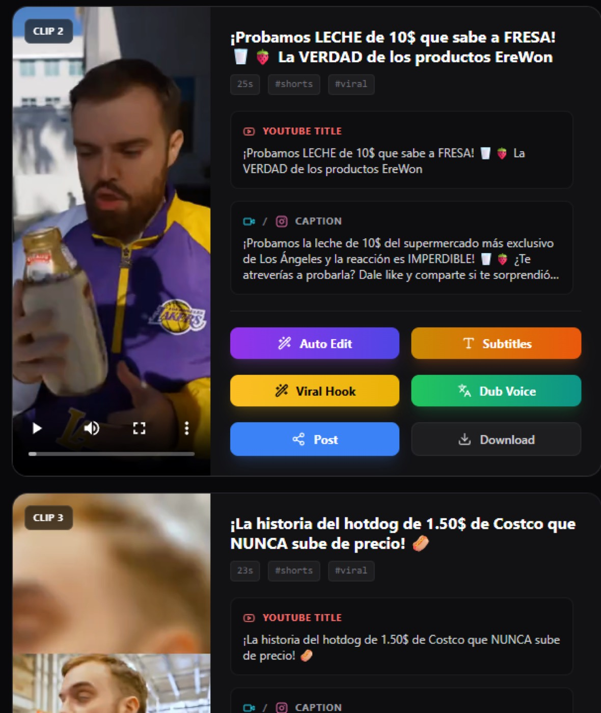

AI video · desktop · computer vision
SermonNoteClipper
Long-form video in. Ready-to-post vertical clips out. A production pipeline chains scene detection, YOLO subject tracking, Whisper transcription, Gemini moment selection, reframing, captions, and export.
The interesting part: packaging heavy ML into a workflow that non-technical media teams can use.
PythonYOLOWhisperGemini
case study ↗